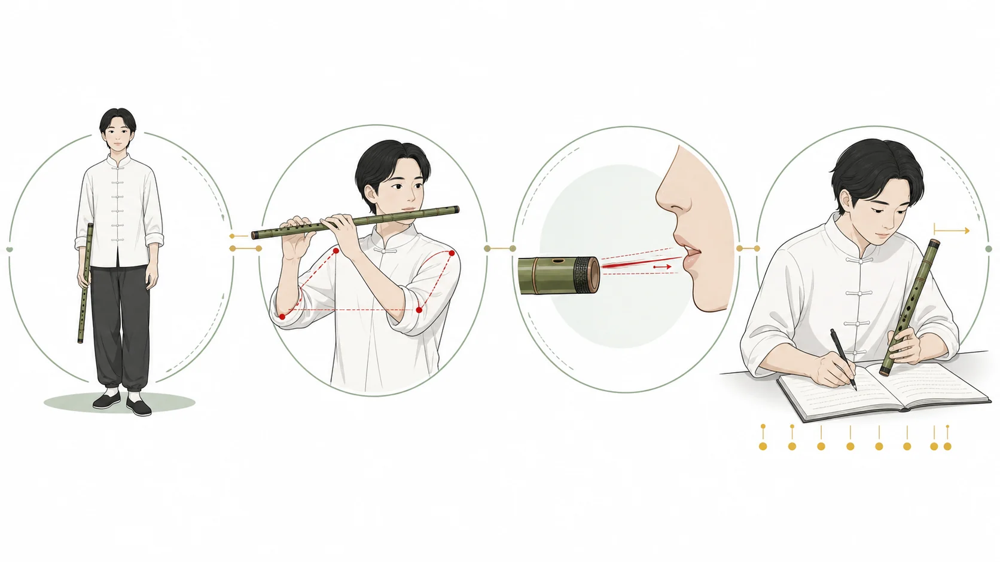

學習中心
先學穩定發音，再處理音準、吐音與樂句。每個單元列出目標、練習方法和自我檢查；如身體不適，應停止練習，不必勉強延長氣息。
把發聲、長音、手指、節奏、單吐和短曲整合成十二週可調整課程；每個階段都有進入條件、練習紀錄及升級準則。
用逐項排除處理無聲、音高不穩、笛膜異響、漏氣、接頭和收納問題；每次只改一項並留下紀錄。
一套可調整的四週入門框架：由穩定發聲、筒音和指序，逐步進入單吐及慢速雙吐，再以錄音和量化準則追蹤進度。
以音區連接、音準、複合吐奏、顫音、滑音和曲目版本比較建立中級能力；重點是說明選技法的理由，而非堆疊效果。
用一課認識竹笛結構、笛膜、筒音和基本發聲，並養成吹奏後保養樂器的習慣；器物知識均附有可追溯證據。
